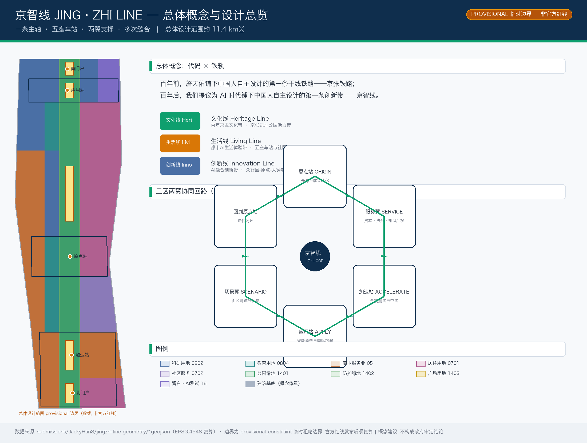
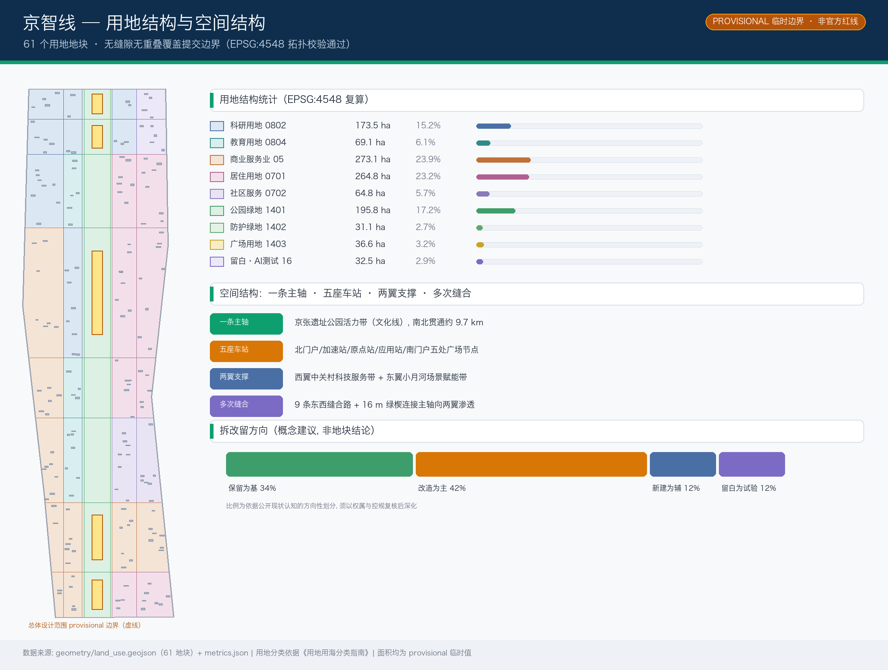
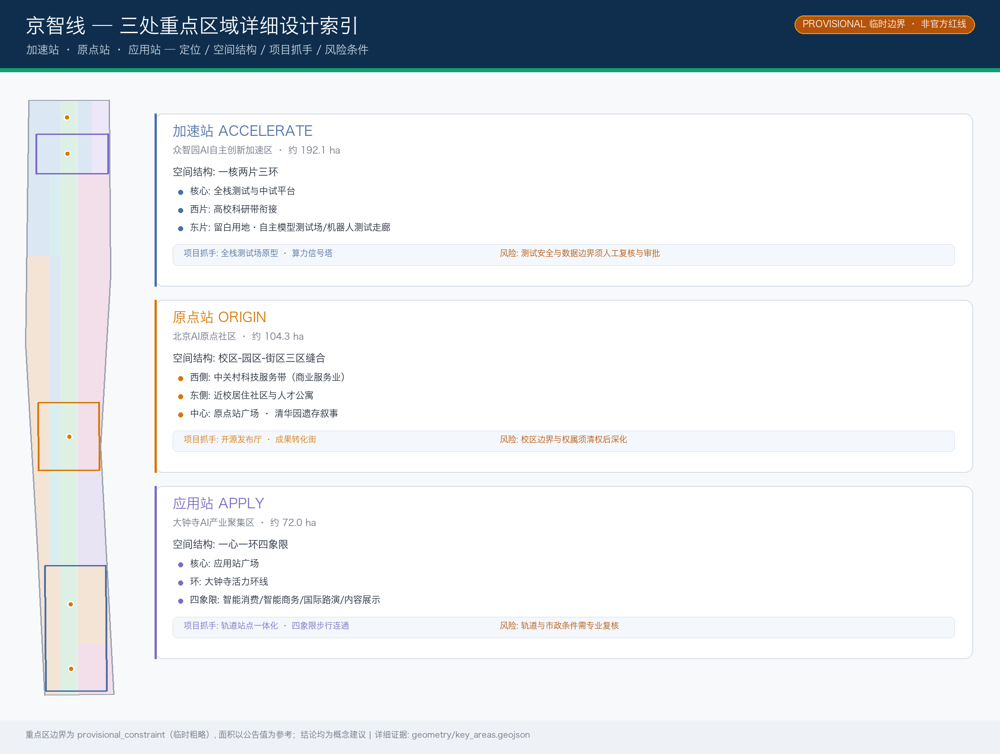
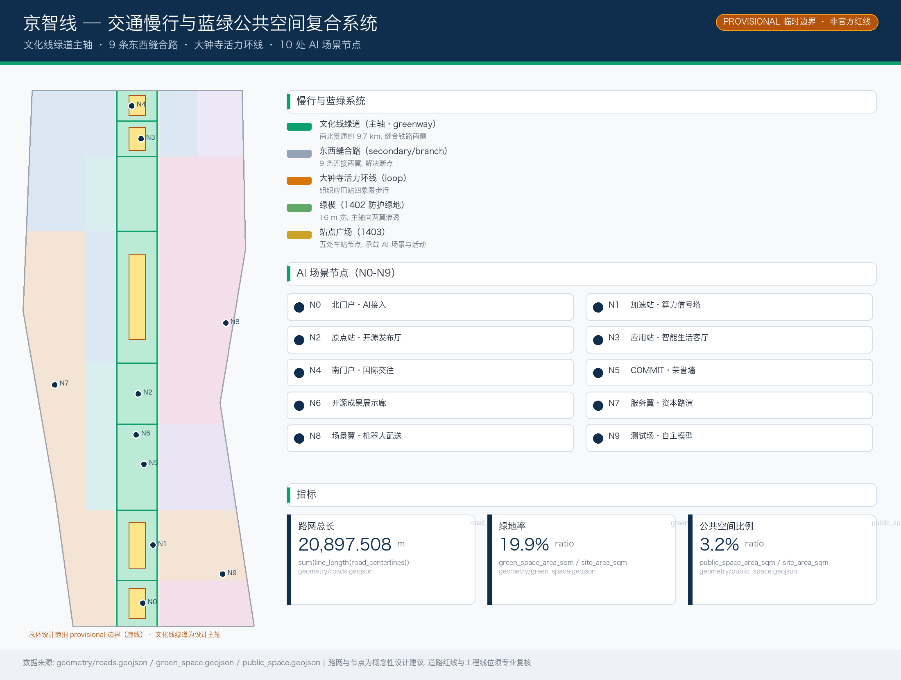
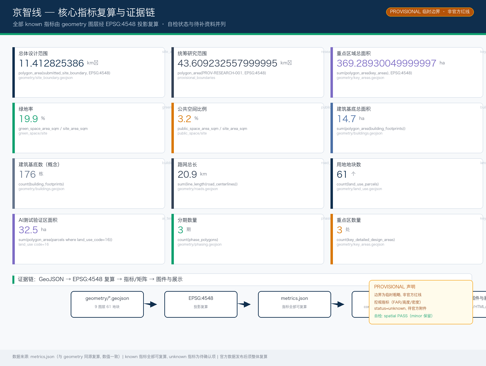

京智线 JING·ZHI LINE——百年京张AI创新带总体概念与城市设计
以「代码×铁轨」同构隐喻提出「京智线」总体概念：把百年京张铁路遗址公园转化为面向AI世纪的创新主轴，以一条文化线（京张遗址公园活力带）、一座原点站（北京AI原点社区）、一座加速站（众智园）、一座应用站（大钟寺）和两翼（中关村科技服务翼、小月河场景赋能翼）组织11.4平方公里的总体设计范围，配套10张AI场景卡、4处朝圣地标与年度活动运营体系，形成可供专业团队深化的概念性城市设计方案。
京智线 JING·ZHI LINE——百年京张AI创新带总体概念与城市设计
> 百年前，詹天佑铺下中国人自主设计的第一条干线铁路——京张铁路； > 百年后，我们提议为 AI 时代铺下中国人自主设计的第一条创新带——京智线。
设计依据与资料清单
本方案以北京市规划和自然资源委员会海淀分局发布的《百年京张AI创新带城市设计国际方案征集资格预审公告》为第一依据 [source:OFFICIAL-ANNOUNCEMENT]，以仓库 brief/site-package/ 中机器可读的 design_brief.json、agent_taskbook.json、allowed_design_space.json、sources.json、enums/、ranges/、schemas/、standards/ 为结构化依据 [source:SITE-PACKAGE]，并读取 data/source_registry.json 与 data/processed/agent_fact_pack.md 建立资料可用性边界 [source:SOURCE-REGISTRY][source:PROCESSED-FACT-PACK]。
本方案采用的三层范围与三处重点区几何来自 brief/site-package/geometry/provisional_boundaries.geojson（PROV-SITE-001、PROV-KEY-001/002/003），属于**临时粗略边界**（geometry_role=provisional_constraint、official_boundary=false、boundary_precision=provisional_rough），只能用于方案生成、可视化、自检和设计讨论，不得作为官方红线、审批依据或精确面积依据 [source:BOUNDARY-SOURCE][source:KEY-AREA-SOURCE][source:DATA-SRC-PROVISIONAL-BOUNDARIES-20260605]；组织方数据缺口不阻断内容评分，official polygon 发布后须复算全部面积敏感指标。方案遵守任务书统一边界条款：所有空间落地建议均表述为「概念建议」「参考方案」「可供专业团队深化研究」，不替代正式规划，不构成政府审定结论 [source:AGENT-TASKBOOK][source:DATA-SRC-AGENT-TASKBOOK-20260518][standard:PROJECT-AGENT-OPEN-CALL-TASKBOOK]。
方案按《城市设计管理办法》[standard:MOHURD-URBAN-DESIGN-MEASURES][source:DATA-SRC-MOHURD-URBAN-DESIGN-MEASURES]、《城市、镇控制性详细规划编制审批办法》[standard:MOHURD-CONTROL-DETAILED-PLANNING][source:DATA-SRC-MOHURD-CONTROL-DETAILED-PLANNING]、《国土空间调查、规划、用途管制用地用海分类指南》[standard:MNR-LAND-USE-CLASSIFICATION-GUIDE][source:DATA-SRC-MNR-LAND-USE-CLASSIFICATION-202311] 组织专业证据链；《建筑工程设计文件编制深度规定（2016年版）》[standard:MOHURD-ARCH-DESIGN-DEPTH-2016] 因仓库未取得官方正文，仅列为待补资料项，不作为已满足的权威依据 [depth:existing_conditions_diagnosis][depth:three_level_scope_framework]。方案正式成果包含 proposal.md（本文）、9 个 GeoJSON 图层、metrics.json、三个矩阵、5 张派生图、A3/A0 图纸与离线 HTML 可视化 [data:geometry/site_boundary.geojson#SITE-001]。

三层范围工作框架
方案按公告 1.4 建立三层工作范围 [source:OFFICIAL-ANNOUNCEMENT]：
1. **统筹研究范围（约 43.6 平方公里）**：北至北五环路、东至京藏高速、南至西直门外大街、西至万泉河路。研究目标为 AI 创新生态体系与未来城市形态 [depth:three_level_scope_framework]；本研究以 research_area_sqm 指标记录其面积 [metric:research_area_sqm]，作为产业与功能统筹的坐标系统。 2. **总体设计范围（约 11.4 平方公里，即方案提交边界）**：本方案的全部设计图层均在该边界内派生 [data:geometry/site_boundary.geojson#SITE-001]，面积以 EPSG:4548 复算为 site_area_sqm [metric:site_area_sqm]。由于使用 provisional 边界，所有用地面积、比例、绿地和公共空间指标均为临时值，official 边界发布后需整体复算。 3. **重点区域范围（约 368.4 公顷，三处）**：众智园AI自主创新加速区（约 192.1 公顷）、北京AI原点社区（约 104.3 公顷）、大钟寺AI产业聚集区（约 72.0 公顷）[data:geometry/key_areas.geojson#PROV-KEY-001][data:geometry/key_areas.geojson#PROV-KEY-002][data:geometry/key_areas.geojson#PROV-KEY-003]，以 key_detailed_design_area_sqm 与 key_area_count 记录 [metric:key_area_count]。
三层范围从「产业战略—总体城市设计—重点片区详细设计」逐级传导：研究范围回答「AI 创新带与京津冀及全球创新网络的耦合关系」，总体设计范围回答「一条主轴、三座车站、两翼支撑的空间结构如何落地」，重点区域回答「原点站、加速站、应用站各自的详细设计」[depth:three_key_area_detailed_design]。

统筹研究范围产业与未来城市研究
总体概念：京智线 JING·ZHI LINE（agent.1）
本方案提出总体概念「**京智线 JING·ZHI LINE**」：以「代码×铁轨」同构隐喻，把京张铁路这一「中国人自主设计的第一条干线铁路」转化为「AI 时代中国人自主设计的第一条创新带」[source:AGENT-TASKBOOK]。命名体系将公告三大定位转化为三条「线」：百年京张文化带→**文化线 Heritage Line**、都市AI生活体验带→**生活线 Living Line**、AI融合创新带→**创新线 Innovation Line**；三处重点区域转化为「车站」：原点站 ORIGIN（北京AI原点社区）、加速站 ACCELERATE（众智园）、应用站 APPLY（大钟寺）；两翼为**服务翼 SERVICE WING**（中关村科技服务）与**场景翼 SCENARIO WING**（小月河场景赋能）。Logo 视觉识别方向为「道钉×光标」：两条平行轨道线（京张铁轨）与一个像素光标（AI 输入符）交叉叠合，象征「在铁轨上输入代码」，可延展为门牌、井盖、导视、灯光装置等公共界面组件 [depth:overall_spatial_structure]。该命名与视觉识别为概念建议，字体、图形、商标均需在深化阶段完成清权。
五大功能与三区两翼协同回路
方案按任务书五大功能组织空间功能 [source:AGENT-TASKBOOK]：AI全栈自主创新体系（加速站+东翼测试场）、世界级AI创新生态（原点站+西翼服务）、AI+场景赋能新范式（场景翼）、智能化AI活力城市（文化线+生活线）、AI治理全球话语权（加速站治理展示+国际活动）。三区两翼形成「原点创生—加速测试—应用消费—服务反哺—场景验证」的循环：原点站孵化成果经服务翼资本与法务支持，输送至加速站完成全栈测试，经应用站转化为消费级体验，再经场景翼在真实街区验证，数据与场景反馈回原点站迭代。
全球 AI 创新生态案例（agent.2，5-8 例）
| 案例 | 地域 | 可借鉴机制 | 在本方案中的转化方向 | | --- | --- | --- | --- | | Kendall Square（波士顿） | 学术-产业飞地 | 大学-企业短步行协作圈、专利快速转化 | 原点站近校成果转化街（概念建议） | | 南山科技园（深圳） | 硬件创新集群 | 全链条硬件迭代、开放供应链 | 加速站全栈测试场与中试空间（概念建议） | | 城西科创大走廊（杭州） | 场景驱动创新 | 数字场景城市级开放、云上协同 | 场景翼开放测试与公共数据场景（概念建议） | | 纬壹科技城 one-north（新加坡） | 政府治理+生态运营 | 混合用地、邻里即实验室、国际社区 | 大钟寺国际交往与生活线混合街区（概念建议） | | 东伦敦知识园（伦敦） | 知识密集更新 | 旧城更新中保留工业遗存、创意社群运营 | 文化线铁路遗存再利用与开发者社群（概念建议） | | Adlershof 科技城（柏林） | 科学城转型 | 大学-研究所-企业同址、公共空间先行 | 众智园公共客厅与设施共享（概念建议） |
上述案例经验均表述为可深化机制，不构成对任何企业、投资额或产值的引用 [source:AGENT-TASKBOOK][standard:PROJECT-AGENT-OPEN-CALL-TASKBOOK]。

总体设计范围城市更新与控规深度城市设计
总体设计范围提出「**一条主轴、五座车站、两翼支撑、多次缝合**」的空间结构 [depth:overall_spatial_structure][depth:land_use_layout]：
- **一条主轴**：京张遗址公园活力带（文化线），南北贯通约 9.7 公里，是方案的核心公共空间与叙事载体 [data:geometry/green_space.geojson#GREEN-000][metric:green_ratio]。
- **五座车站（公共节点）**：北门户、加速站、原点站、应用站、南门户五处广场 [data:geometry/public_space.geojson#PUBLIC-000]，承载 AI 场景、活动与集散。
- **两翼支撑**：西翼中关村科技服务带（商业服务业+科研用地），东翼小月河场景赋能带（居住+社区服务+留白测试用地）。
- **多次缝合**：以 9 条东西缝合路与 16 米宽绿楔连接主轴向两翼渗透 [data:geometry/roads.geojson#ROAD-SPINE]，缝合铁路割裂的两侧城市界面。
用地布局按《用地用海分类指南》组织 [standard:MNR-LAND-USE-CLASSIFICATION-GUIDE]，共 61 个用地地块 [metric:land_use_parcel_count]，用地结构与面积见 geometry/land_use.geojson [data:geometry/land_use.geojson#LU-R0-C2]：科研用地（0802）集中于众智园与原点西区，教育用地（0804）呼应北航、北邮等高校集聚带 [source:OFFICIAL-ANNOUNCEMENT]，商业服务业用地（05）构成中关村服务翼与大钟寺商圈，居住与社区服务用地（0701/0702）分布于缝合社区，公园绿地（1401）构成主轴，防护绿地（1402）构成绿楔，广场用地（1403）构成车站节点，留白用地（16）预留给 AI 测试验证场景。受 provisional 边界影响，各地块面积均为概念值；控规容积率、建筑高度、建筑密度、绿地率等法定指标未在公开资料中取得，全部列为待确认条件，不以任何形式伪装为审定指标 [depth:development_intensity_controls][depth:height_massing_character][metric:floor_area_ratio][metric:building_height_m]。
城市更新总体框架采用「**保留为基、改造为主、新建为辅、留白为试验**」的拆改留逻辑 [depth:retain_renovate_demolish]：沿文化线以微更新缝合慢行断点，重点区内以功能置换激活既有建筑，仅在明确缺失的功能（如测试场、发布厅）处建议新建原型，具体地块拆改留方案必须由专业团队依据权属与控规深化，本方案仅给出方向性建议 [data:geometry/buildings.geojson#BLDG-001][data:geometry/phasing.geojson#PHASE-P1]。
重点区域详细设计
三处重点区均按规划综合实施方案的城市设计深度方向组织，采用「定位+空间结构+建筑更新+交通慢行+公共空间+AI场景+实施风险」的完整小方案结构 [depth:three_key_area_detailed_design]；由于重点区多边形为 provisional，面积与边界相关结论均为方向性 [source:KEY-AREA-SOURCE]。
加速站：众智园AI自主创新加速区（约 192.1 公顷）
定位：花园型 AI 全栈自主创新街区（AI全栈自主创新体系与AI治理全球话语权）[source:AGENT-TASKBOOK]。空间结构为「一核两片三环」：核心为全栈测试与中试平台，西片衔接高校科研带，东片为自主模型测试场与机器人测试走廊（留白用地）[data:geometry/land_use.geojson#LU-R0-C4]。建筑更新以产业楼宇功能置换为主，建议新增中试与算力配套原型 [data:geometry/buildings.geojson#BLDG-001]。交通建议强化北五环门户接入与内部慢行环，公共空间建议依托清河界面形成低碳创新廊 [source:OFFICIAL-ANNOUNCEMENT]。风险：测试场景涉及安全与数据边界，必须建立人工复核与审批机制。
原点站：北京AI原点社区（约 104.3 公顷）
定位：近校型成果转化与开源人才社区（世界级AI创新生态）。空间结构为「校区-园区-街区三区缝合」：西侧为中关村科技服务带（商业服务业），东侧为近校居住社区，中心原点站广场连接清华园铁路遗存叙事。建议功能：开源发布厅、成果转化驿站、人才公寓、知识产权与法务服务、夜间协作空间（概念建议）[data:geometry/land_use.geojson#LU-R3-C3]。交通以慢行优先缝合校区边界，公共空间以原点站广场为锚点组织开发者散步道。风险：校区边界与权属须清权后深化。
应用站：大钟寺AI产业聚集区（约 72.0 公顷）
定位：城市型智能经济与国际交往街区（智能原生新业态）。空间结构为「一心一环四象限」：应用站广场为核心，大钟寺活力环线串联四象限 [data:geometry/roads.geojson#ROAD-DZ-RING]，象限功能分别组织智能原生消费、智能商务、国际路演与内容展示（概念建议）。建议以轨道站点一体化组织步行连通与地下衔接研究 [source:OFFICIAL-ANNOUNCEMENT]，建筑更新以商业楼宇公共界面改造为主。风险：轨道一体化与市政条件需专业复核。

AI 创新生态、人才画像与 AI+ 场景
用户画像（agent.3，≥5 类）
| 用户画像 | 典型需求 | 空间响应 | 隐私与复核边界 | | --- | --- | --- | --- | | 开源开发者 | 发布、协作、测试、社区声誉 | 原点站开源发布厅、公共代码墙、夜间协作空间 | 不采集个人行为轨迹；活动数据仅聚合统计 | | 初创团队 | 低成本办公、算力入口、产品试验场 | 加速站共享测试场、端侧算力服务点、标准治理咨询 | 算力与数据服务需另行授权 | | 头部企业访客 | 展示、商务、国际接待、人才招聘 | 应用站国际路演客厅、轨道接驳、公共环境更新 | 企业标识与案例须清权 | | 周边居民 | 通勤、休闲、社区服务、低扰动更新 | 文化线慢行环、社区服务嵌入、夜间照明分级 | 不将居民画像用于商业推荐 | | 高校师生 | 成果转化、跨校协作、日常慢行 | 校区-园区慢行缝合、成果转化驿站、AI 教育体验点 | 校园数据与科研成果需授权 |
AI 场景卡（agent.3，10 张，其中 3 张为产业测试验证场景）
| 场景卡 | 空间载体 | 场景-空间-运营映射 | 人工复核边界 | | --- | --- | --- | --- | | 01 开源发布厅 | 原点站广场 | 发布-展示-路演-传播闭环 | 内容审核与版权清权 | | 02 自主模型测试场 ★ | 众智园东翼留白用地 | 测试-评测-标准工作坊 | 安全评测须持证与审批 | | 03 机器人测试走廊 ★ | 众智园东翼留白用地 | 低速配送-巡检-场景仿真 | 路权与安全许可 | | 04 AI 安全治理沙盒 ★ | 加速站核心 | 红队测试-治理展示-规则共创 | 审计留痕、人工终审 | | 05 端侧算力驿站 | 文化线沿线节点 | 公共算力-低碳能源-服务融合 | 能源与算力服务授权 | | 06 AI 慢行导航 | 文化线绿道 | 导视-断点识别-无障碍服务 | 不采集个体轨迹 | | 07 近校成果转化街 | 原点站西侧 | 孵化-法务-投融资服务链 | 科研成果授权 | | 08 智能原生消费客厅 | 应用站四象限 | 智能终端-内容消费-体验运营 | 消费者隐私保护 | | 09 AI 生活服务样板街 | 缝合社区界面 | 医疗/教育/法律 AI+ 服务 | 医疗与个人信息合规 | | 10 京智线活动周路线 | 全域公共空间 | 文化-开源-产业-国际路演路线 | 活动安全与公共许可 |
（★为 AI 产业测试验证场景，均为概念建议，不得表述为已批准运营）[source:AGENT-TASKBOOK][standard:PROJECT-AGENT-OPEN-CALL-TASKBOOK][data:geometry/land_use.geojson#LU-R1-C4]
用地、建筑规模与拆改留方案
用地结构见 geometry/land_use.geojson：61 个地块精确覆盖提交边界、无缝隙无重叠（EPSG:4548 复算校验通过）[data:geometry/land_use.geojson#LU-R6-C3][metric:land_use_parcel_count]。建筑规模为概念性体量研究：176 栋建筑基底模型 [metric:building_count]，基底总面积 building_footprint_area_sqm [metric:building_footprint_area_sqm]，建筑基底率 building_footprint_ratio [metric:building_footprint_ratio]，仅用于表达密度分布方向，不构成建设规模承诺 [depth:development_intensity_controls]。拆改留逻辑：保留历史与高校建筑、改造低效产业楼宇、新建缺口功能原型、留白试验用地 [depth:retain_renovate_demolish]。全部面积、比例与规模均可从 GeoJSON 与指标复算 [data:geometry/buildings.geojson#BLDG-001]；控规容积率、建筑高度、建筑密度、绿地率、退线等指标缺官方附件，全部列为待确认事项 [metric:floor_area_ratio][metric:building_height_m][metric:green_ratio_official]，如官方数据发布，须整体复算。
交通、轨道、市政与公共服务设施
交通系统以「主轴+缝合+环线」组织 [depth:traffic_rail_slow_parking]：文化线绿道为主轴（greenway）[data:geometry/roads.geojson#ROAD-SPINE]，9 条东西缝合路连接两翼，大钟寺活力环线组织应用站四象限 [data:geometry/roads.geojson#ROAD-DZ-RING]，路网总长约 road_centerline_length_m [metric:road_centerline_length_m]。轨道与公交：建议强化大钟寺站、知春路站等轨道站点的一体化步行接驳研究 [source:OFFICIAL-ANNOUNCEMENT]，结合 AI 慢行导航场景优化断点识别（概念建议）。市政与新型基础设施：建议在加速站与场景翼设置端侧算力、分布式能源与传统市政融合的原型研究，道路红线、管线综合、地下空间等工程结论均列为待专业团队深化，不构成工程方案 [depth:municipal_new_infrastructure]。

蓝绿空间、公共空间与城市风貌
京张遗址公园活力带（文化线）
主轴绿地率 green_ratio [metric:green_ratio]、公共空间比例 public_space_ratio [metric:public_space_ratio] 由 geometry/green_space.geojson 与 geometry/public_space.geojson 复算 [data:geometry/green_space.geojson#GREEN-000][data:geometry/public_space.geojson#PUBLIC-000]。方案建议以 16 米宽绿楔连接主轴向两翼渗透，缝合铁路东西两侧城市界面 [depth:blue_green_public_space]。风貌基调：以铁轨、道砟、站房等铁路遗存元素为底色，叠加像素化、代码化的 AI 新文化表达，屋顶与第五立面纳入城市设计引导（概念建议）。
AI 朝圣地标与荣誉展示体系（agent.4，≥3 处）
1. **清华园「0 号里程碑 KILOMETER 0」**：在清华园车站旧址区域设立「零公里」纪念点，以里程碑形式标识「中国自主铁路的起点 × AI 创新带的原点」双重含义（概念建议，须经文保与审批）。 2. **「COMMIT·京张」智能体贡献荣誉墙**：沿文化线设置智能体与开发者贡献展示墙，采用可更新的数字+实体双轨展示，呼应纪念体系长期更新机制（概念建议）。 3. **开源成果展示廊 OPEN-SOURCE GALLERY**：在原点站广场设置开源项目展示廊，将代码贡献转化为可参观的城市界面（概念建议）。 4. **「PATCH·京张」AI 里程碑纪念节点**：每年在文化线新增一枚「补丁」式纪念节点，记录年度杰出贡献，形成可生长的公共艺术体系（概念建议）。
上述地标均表述为概念建议，不得表述为已批准建设 [source:AGENT-TASKBOOK][standard:PROJECT-AGENT-OPEN-CALL-TASKBOOK]。
更新项目清单、实施政策与分期计划
更新项目清单（agent.6 空间载体）
| 项目编号 | 项目名称 | 类型 | 主要依赖 | 证据引用 | | --- | --- | --- | --- | --- | | JZ-01 | 文化线慢行断点缝合 | 公共空间/交通 | 道路红线、桥下空间、交通组织复核 | [data:geometry/roads.geojson#ROAD-SPINE] | | JZ-02 | 加速站全栈测试场原型 | 产业/新基建 | 安全评测许可、留白用地确认 | [data:geometry/land_use.geojson#LU-R0-C4] | | JZ-03 | 原点站近校成果转化街 | 城市更新/产业服务 | 校区边界、权属、首层业态 | [data:geometry/buildings.geojson#BLDG-001] | | JZ-04 | 应用站四象限步行连通 | 轨道一体化/慢行 | 轨道站点、交叉口、市政管线 | [data:geometry/public_space.geojson#PUBLIC-000] | | JZ-05 | 开源成果展示廊与荣誉墙 | 文化/运营 | 公共空间许可、版权清权 | [data:geometry/phasing.geojson#PHASE-P1] | | JZ-06 | 京智线活动周公共路线 | 运营/品牌 | 活动安全、公共许可、传播合规 | [data:geometry/phasing.geojson#PHASE-P3] |
实施政策与分期（agent.6）
分期以 geometry/phasing.geojson 表达 [data:geometry/phasing.geojson#PHASE-P1][data:geometry/phasing.geojson#PHASE-P2][data:geometry/phasing.geojson#PHASE-P3][metric:phasing_phase_count][depth:phasing_implementation]：**近期（2026-2028）** 文化线绿廊贯通、原点站与大钟寺活力启动；**中期（2028-2030）** 众智园全栈创新体系与测试场成型；**远期（2030-2035）** 中段缝合、两翼深化与全域运营。实施政策建议以「场景开放-政策试点-社区共治」为主线：优先开放公共空间与场景（场景开放运营机制），以概念验证推动政策试点，以开发者社区与居民委员会参与更新决策（均为概念建议）。
全球 AI 创新活动体系与长期运营（agent.6）
年度活动体系（概念建议）：3 月「代码春分」开源贡献周、5 月全球 AI 创新大会（应用站国际路演客厅）、8 月「京智线马拉松」开发者共创、11 月「AI 朝圣日」文化线巡礼；社区运营：每周「轨道夜校」技术沙龙、季度「开源成果发布会」、年度「COMMIT 奖」；场景开放运营：测试场预约制、公开数据集与审计机制；国际传播：KILOMETER 0 全球直播点、集章打卡「京智线护照」、双语文案「FROM THE FIRST RAIL TO THE FIRST LINE OF AI」；招引转化：活动-社区-政策对接通道 [depth:renewal_project_list]。所有活动、招商、资金与政策安排均表述为概念建议或深化方向，不得表述为已确定政府安排 [source:AGENT-TASKBOOK]。
指标体系、面积复算与合规矩阵
方案指标以 metrics.json 登记并全部可复算 [metric:site_area_sqm][metric:green_ratio][metric:public_space_ratio]：研究范围约 43.6 平方公里、提交边界 site_area_sqm、重点区 key_detailed_design_area_sqm [metric:key_detailed_design_area_sqm]、绿地 green_ratio、公共空间 public_space_ratio、建筑基底 building_footprint_area_sqm、路网 road_centerline_length_m、AI 测试区 ai_test_zone_area_sqm [metric:ai_test_zone_area_sqm]、用地地块 land_use_parcel_count、分期 phasing_phase_count。面积均按 design_brief.json 规定以 EPSG:4548 投影复算，GeoJSON 以 EPSG:4326 交换 [source:SITE-PACKAGE]。控规指标（容积率、高度、密度、绿地率、退线）为 status=unknown 的待确认项 [metric:floor_area_ratio][metric:building_height_m][metric:green_ratio_official]。
合规覆盖见 compliance_matrix.json（公告 1.3.1-1.5.3.3 共 17 项 + agent.1-agent.6 共 6 项全部覆盖）、standard_matrix.json（6 项标准响应）、design_depth_matrix.json（15 项正式深度全部 complete）[depth:metrics_recalculation][depth:risk_missing_data]。自检状态见 self_check.json；provisional 边界精度警示全文保留 [source:BOUNDARY-SOURCE]。
风险、版权与合规说明
- **资料合规**：本方案仅使用官方公告、任务书摘录、公开标准与 provisional 边界等可公开/已清权资料，不使用非公开规划图件、内部指标或未授权数据 [source:SOURCE-REGISTRY]。
- **版权与知识产权**：命名、Logo 方向、场景卡与文本均为 AI 生成原创内容，遵循
COMMUNITY-DISPLAY-ONLY许可 [depth:risk_missing_data]；深化阶段使用字体、图像、商标、人物与企业标识须另行清权。 - **边界声明**：provisional 边界不得作为官方红线与精确面积依据，official 数据发布后须复算并替换 [source:BOUNDARY-SOURCE]；锁定层与约束见 [data:geometry/constraints.geojson#CONSTRAINT-SITE][data:geometry/constraints.geojson#CONSTRAINT-KEY-1]。
- **责任声明**：AI 生成内容由作者（GitHub: JackyHanS）对事实、引用与最终表达负责；所有空间与运营建议均为概念建议，不构成政府审定结论、投资承诺或工程可行性结论。
- **隐私保护**：所有 AI 场景均设置人工复核与审计边界，不采集个体行为轨迹，不做未经授权的商业化使用 [source:AGENT-TASKBOOK]。
- 完整声明见
report/copyright_statement.md。
参考资料
brief/site-package/design_brief.json[source:SITE-PACKAGE]brief/site-package/allowed_design_space.json[source:SITE-PACKAGE]brief/site-package/agent_taskbook.json[source:AGENT-TASKBOOK]brief/site-package/sources.json[source:SITE-PACKAGE]brief/site-package/geometry/provisional_boundaries.geojson[source:BOUNDARY-SOURCE][source:KEY-AREA-SOURCE]brief/site-package/standards/standards.json及references/[standard:PROJECT-OFFICIAL-ANNOUNCEMENT][standard:MOHURD-URBAN-DESIGN-MEASURES]data/source_registry.json[source:SOURCE-REGISTRY]data/processed/agent_fact_pack.md[source:PROCESSED-FACT-PACK]brief/site-package/schemas/*.json、docs/formal-submission-guide.md- 北京市规划和自然资源委员会海淀分局《百年京张AI创新带城市设计国际方案征集资格预审公告》 [source:OFFICIAL-ANNOUNCEMENT][source:DATA-SRC-OFFICIAL-ANNOUNCEMENT-20260509]